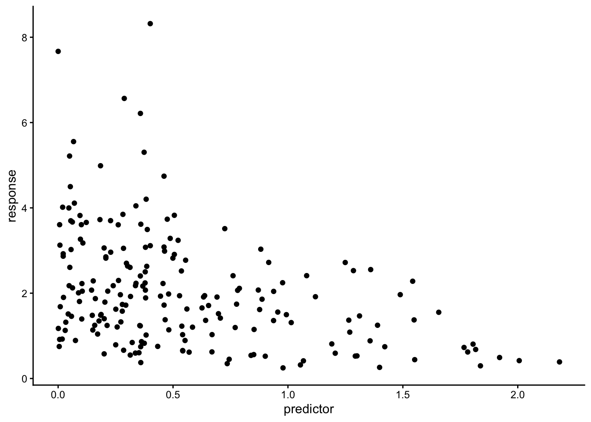
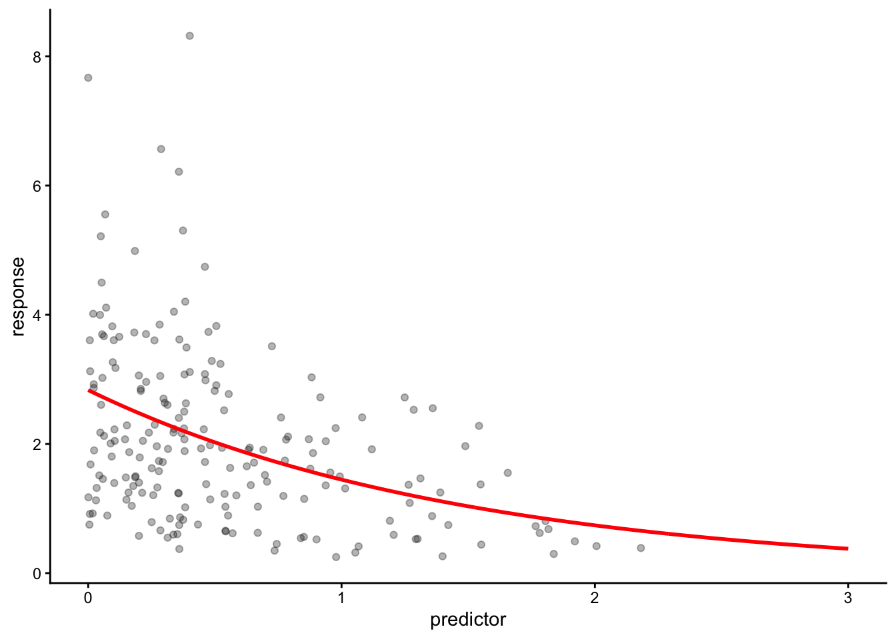

library(tidyverse)
library(lubridate)
library(kableExtra)
theme_set(theme_classic())Background & Data
Dataset description: Urban lakes are heavily impacted by human activities and climate variability, and they provide many ecosystem services to residents. The MSP LTER program is studying long term changes in urban lake water quality, ecology and management as part of our long term studies of urban environments. The goal of this dataset is to understand how land-use change, management, and climate have impacted urban lake biogeochemistry over time. This dataset includes parameters characterizing the long term (> 5 years) surface water quality and chemistry of 294 lakes and ponds in the Minneapolis-Saint Paul Seven County Metropolitan Area, Minnesota, USA
lakes <- read_csv(here::here('data', "Timeseries_v6_forEDI.csv"))ggplot(lakes, aes(result)) +
geom_histogram() +
facet_wrap(~parameter, scales = "free")
lakes_wide <- lakes |>
pivot_wider(names_from = parameter, values_from = result)DAG
graph TD Date[Sample Date] County[County] Secchi[Secchi Depth] TP[Total Phosphorus] TN[Total Nitrogen] Nitrate[Nitrate] Nitrite[Nitrite] Secchi --> TP
Statistical Model
Model thoughts:
Using a Gamma distribution seems like the best choice for pollution concentrations as a response.
- Right skewed data, positive continuous data
Model in statistical notation
\[TPConcentration \sim Gamma(\mu, \phi)\] \[\log(\mu)? = \beta_0 + \beta_1 * SecchiDepth\]
Response Family: Gamma
Link Function: log()
Predictor: Secchi Disk Depth
Fit model to simulated data
shape: 1 / dispersion parameter (\(1 / \phi\))
scale: mean / shape
n <- 200
beta0 <- 1
beta1 <- -0.7 # Simulate response decrease as predictor increases
phi <- 3
predictor <- rgamma(n = n, shape = 1, scale = 0.5)
response <- rgamma(n = n, shape = phi, scale = exp(beta0 + beta1 * predictor) / phi)
sim_df <- data.frame(predictor, response)
ggplot(sim_df, aes(predictor, response)) +
geom_point()
# Run model on simulated data
sim_model <- glm(response ~ predictor, data = sim_df, family = Gamma(link = "log"))
# Create grid (one predictor for now)
sim_grid <- tibble(predictor = seq(0,3, length.out = 500))
# Generate predictions
sim_grid <- sim_grid |>
mutate(predicted_response = predict(sim_model, newdata = sim_grid, type = "response"))# Return simulated data coefficients
sim_sum <- summary(sim_model)
tibble(term = c("Beta0", "Beta1"),
value = c(coef(sim_sum)[1], coef(sim_sum)[2])) |>
kbl(digits = 2)| term | value |
|---|---|
| Beta0 | 1.04 |
| Beta1 | -0.67 |
# Plot simulated data with model fit
ggplot() +
geom_point(data = sim_df, aes(predictor, response), alpha = 0.3) +
geom_line(data = sim_grid, aes(predictor, predicted_response), color = 'red', linewidth = 1)
Fit model to real data
# Raw scatterplot
ggplot(lakes_wide, aes(secchi.m, TP.mg_L)) + geom_point(alpha = 0.1)
real_model <- glm(TP.mg_L ~ secchi.m, data = lakes_wide, family = Gamma(link = "log"))real_sum <- summary(real_model)
tibble(term = c("Beta0", "Beta1"),
value = c(exp(coef(real_sum)[1]), exp(coef(real_sum)[2]))) |>
kbl(digits = 2)| term | value |
|---|---|
| Beta0 | 0.12 |
| Beta1 | 0.70 |
In response space, the coefficient for secchi.m (beta1) is about 0.70. Meaning, for every 1 meter increase of Secchi depth (clearer waters), total phosphorus (TP) decreases by 30% (multiplied by 0.70). The intercept coefficient (beta0) represents TP when Secchi is 0 meters. Undo-ing the link, this value is estimated at 0.12 mg/L.
# Create prediction grid (one predictor for now)
pred_grid <- tibble(secchi.m = seq(min(lakes_wide$secchi.m, na.rm = TRUE),
max(lakes_wide$secchi.m, na.rm = TRUE),
length.out = 100))
# Generate predictions
pred_grid <- pred_grid |>
mutate(pred_TP = predict(real_model, newdata = pred_grid, type = "response"))
pred_se <- predict(real_model, newdata = pred_grid, type = "link", se.fit = TRUE)
pred_ci <- pred_grid |>
mutate(log_TP = pred_se$fit,
log_TP_se = pred_se$se.fit,
log_TP_upper = qnorm(0.025, log_TP, log_TP_se),
log_TP_lower = qnorm(0.975, log_TP, log_TP_se),
pred_TP = exp(log_TP),
TP_upper = exp(log_TP_upper),
TP_lower = exp(log_TP_lower))
# Plot
ggplot() +
geom_point(data = lakes_wide, aes(secchi.m, TP.mg_L), alpha = 0.3) +
geom_line(data = pred_grid, aes(secchi.m, pred_TP), color = 'red', linewidth = 1) +
geom_ribbon(data = pred_ci, aes(x = secchi.m, ymin = TP_lower, ymax = TP_upper)) +
ylim(0, 1) +
xlim(0, 2)
Inference
State hypothesis
There is a relationship between total phosphorus (response) and secchi depth as turbidity measurement (predictor).
\(H_0\): \(\beta_1 = 0\)
\(H_1\): \(\beta_1 \neq 0\)
Citation
BibTeX citation:
@online{loo2025,
author = {Loo, Zach},
title = {Statistics {Final:} {Gamma} {Regression}},
date = {2025-12-03},
url = {https://zachyyy700.github.io/posts/2025-12-3-stats-final/},
langid = {en}
}
For attribution, please cite this work as:
Loo, Zach. 2025. “Statistics Final: Gamma Regression.”
December 3, 2025. https://zachyyy700.github.io/posts/2025-12-3-stats-final/.